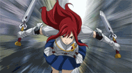

Erza Scarlet
Requip
Requip

Erza is a young woman with long, scarlet hair and brown eyes. She lost her right eye as a child[9] and now has an artificial one which was created by Porlyusica. She has a slender, voluptuous figure that Lucy Heartfilia described as "amazing." Her most common attire consists of a custom-made armor by Heart Kreuz smiths, a blue skirt, black boots, and diamond shaped silver earrings. Her Fairy Tail stamp is blue and is located on the middle of her left upper arm. Erza's specialty in Requip Magic allows her to requip not only armors but different outfits as well, enabling her to change her attire at any given time.
Erza is a very strict person, often criticizing the bad behavior and habits of the other guild members, causing most of them to apologize, fearing that they might invoke her wrath.She is also very impatient, disliking people who don't answer her questions quickly enough. This, coupled with her own tragic childhood, caused many of her guildmates to avoid her due to her social awkwardness. However, she has a great sense of justice and pride in being a member of Fairy Tail. According to Lucy, in the letter she wrote for her mother, Erza is "cool and beautiful, warm and full of passion", while to Erza Knightwalker, Erza is strong, cool and a little scary but relied on by everyone, even so she can be really girly and liked sweet things and cute clothes.Jellal, when he had lost his memories, remembering nothing but the name "Erza", said her name was "full of kindness, brightness and warmth". Erza describes herself as someone who was always crying, since she wasn't able to protect those dear to her. Several examples are when Rob tried to shield her from destruction, and when Jellal was captured because he saved her and was brainwashed by "Zeref".[18] Also, Erza has stated that she feels uncomfortable and insecure when she's not wearing armor. However, when Erza encounters Ikaruga, she overcomes her fear and defeats her without her armor. Despite her reserved personality and mostly dressing in her conservative Heart Kreuz armor, Erza has been shown to have very little modesty and an unusual view on the concept in general. Many of her armors are skimpy, revealing and feminine, and when out of armor she has an affinity for sexy and revealing clothing. Finally, Erza seems to have no problem with men (or at least her male guildmates) seeing her naked. She felt no discomfort stating her desire to shower with Natsu and Gray or the fact that she used to shower with them when they were younger. When they were at the hot spring, when she learned that the boys may have been peeping on her and the other girls, she wanted to invite them to bathe with them, much to Wendy's shock and Lucy's strong objection.Lucy has also stated that Erza has a habit of climbing into her bed in their shared room during the Grand Magic Games. It was shown that Erza can't hold her liquor. While drunk, she acts very aggressive towards others, as shown by her behavior towards her guildmates. She also seems to have a problem recognizing people when drunk. As mentioned by Levy, Erza has a secret fondness for smut and erotic novels.
Requip: The Knight (Kansō Za Naito): Requip is a type of Spatial Magic and Erza's signature form of Magic, over which she possesses great mastery. It is a type of Magic that allows her to swap weapons, armor and clothes at will. Her particular form of Requip is called The Knight. She is noted for her ability to Requip extremely fast and is the only sword Mage known to be capable of Requipping weapons and armor while fighting, she is said to have over 100 different armors, something which made her and her immense strength well known throughout her place of residence, Magnolia Town, and throughout the entire Kingdom of Fiore, earning her the epithet "Titania".
Sword Magic (剣の魔法 Ken no Mahō): In addition to her signature Magic, Requip, Erza is also an extremely talented user of Sword Magic. As the name implies, this is a type of Magic which revolves around the use of swords. Through the use of this Magic, Erza is capable of using her swords to perform different magical attacks. This is usually done in combination with specific armors of hers, which makes her a very deadly combatant. It is also shown that she can also combine different armors with other swords from other armors to either block or attack using deadlier force and mixing different elements together.

Telekinesis: Erza is also a skilled user of Telekinesis. The first time she used this Magic, however, was accidental. When she was a child in the Tower of Heaven she used this Magic to levitate discarded weapons from the ground and launch them at her enemies, something which she did inadvertently, due to the shock caused by Rob's death. Erza's most common use of Telekinesis comes with her Sword Magic, in which she can perform different attacks by controlling her swords remotely.